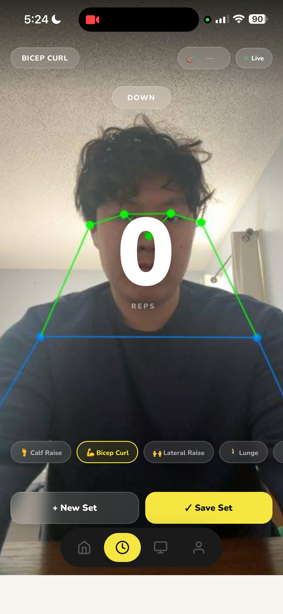
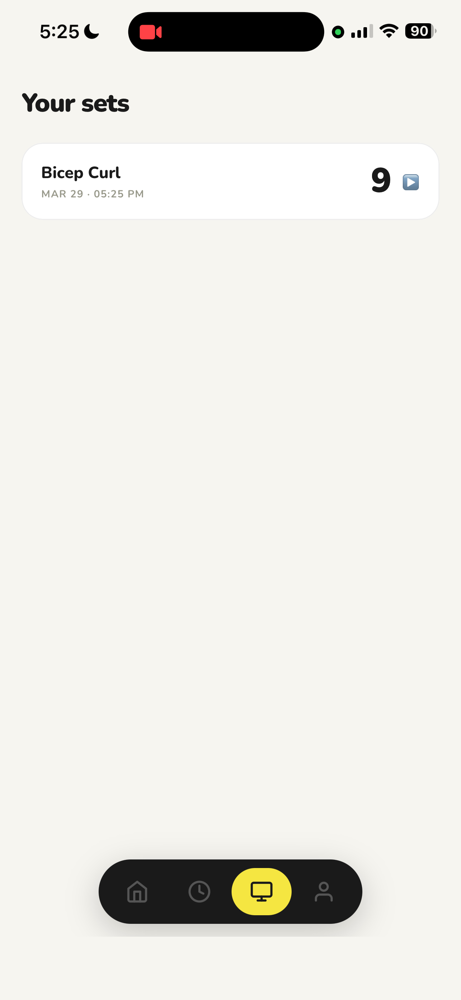
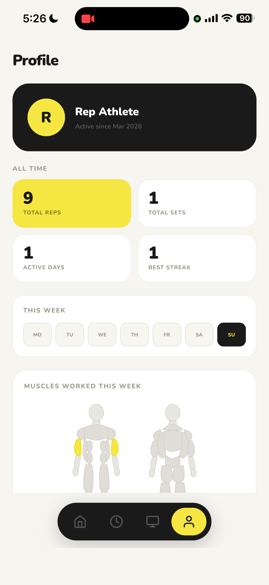
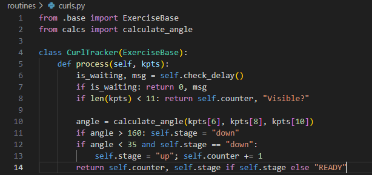
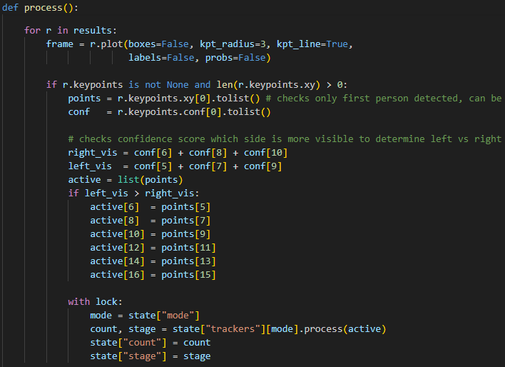
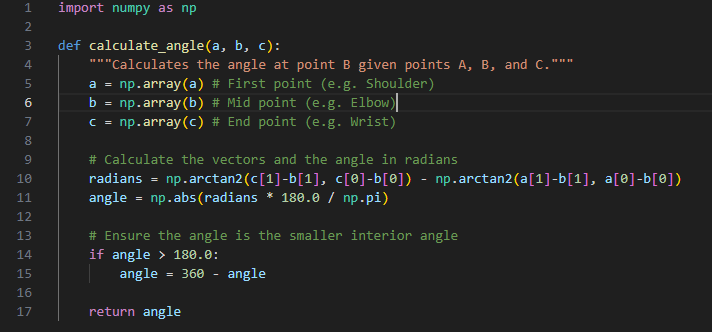

RepAI




Overview
RepAI is an AI-powered workout assistant that runs on your phone. Point your camera at yourself, pick an exercise, and it counts your reps automatically using computer vision. After each set it gives you coaching feedback, saves a replay of your skeleton so you can check your form, and tracks your progress over time. No wearables, no equipment, no App Store needed.

How Rep Counting Works
Each frame from the phone camera gets sent to a Python server running YOLOv8, which detects 17 points on your body in real time. From those points, the system calculates the angles at key joints like your elbow or knee. Each exercise has angle thresholds that define the "up" and "down" positions. A rep is only counted when you complete the full range of motion in the right order, so half-reps don't register.
The system also figures out automatically which side of your body is more visible to the camera and uses that side for tracking, so it works no matter which way you're facing.


Exercises Supported
- Bicep Curl
- Squat
- Lateral Raise
- Shoulder Press
- Push-Up
- Lunge
- Tricep Extension
- Calf Raise
Mobile App
RepAI runs in your phone browser and can be installed to your home screen through Safari, where it opens fullscreen like a native app. The whole frontend is a single HTML file with four tabs: Home, Counter, Sets, and Profile. There's no App Store, no installation, and no framework — just a file served by Flask.
Getting the camera working on iPhone was the trickiest part. iOS only allows camera access over a secure connection, so during development ngrok is used to give the local server a real HTTPS address that the phone can connect to.
AI Feedback
After you save a set, the app sends the exercise and rep count to Claude's API and gets back a short coaching note in plain English. It shows up on the set card in the Sets tab while you're already resting before your next set.
Set Replays
Every set gets recorded while you work out. The recording captures the annotated view with the skeleton overlay, not raw video, so you can see exactly how your form looked from the model's perspective. Tap any set in the Sets tab to watch it back alongside the AI feedback.
Muscle Map
The Profile tab shows a front and back diagram of the human body. After each set, the muscles you worked light up. It resets every Monday so you can see at a glance what you've trained so far this week.
What I Learned
The hardest part was getting the whole pipeline fast enough to feel responsive on a phone. Every frame goes from camera capture to JPEG encoding to network transfer to YOLO inference and back, all in a tight loop. Tuning the angle thresholds for each exercise also took a lot of trial and error since small changes had a big effect on accuracy. Getting it to work as a proper app on iPhone taught me a lot about how browsers handle security and camera permissions.
Next Steps
- Store skeleton keypoints instead of video for lighter and more private set replays
- Add voice cues that call out rep counts and form tips mid-set
- Flag bad reps or joint issues in real time during a set
- Save workout history to a server so it persists across devices
- Run the model on-device so no server is needed at all